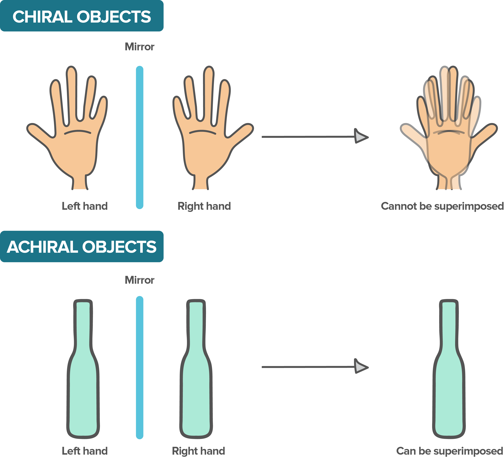
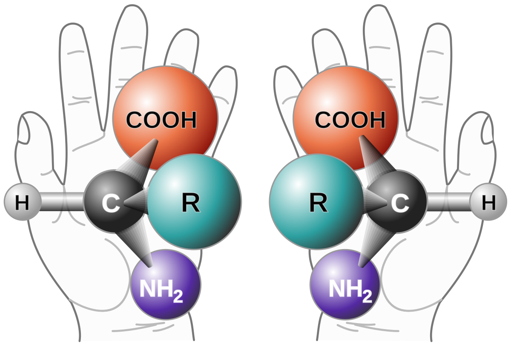
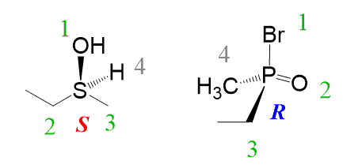
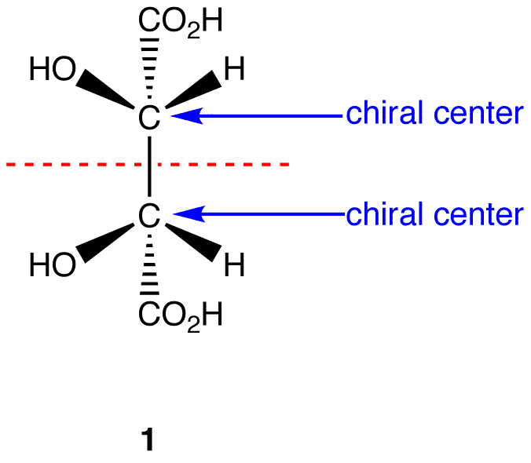
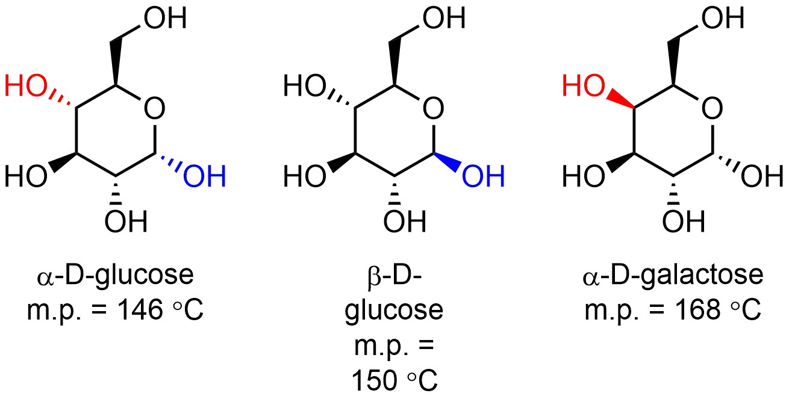
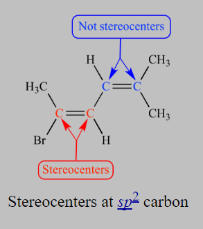
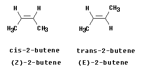

Chiral Molecules and Stereocenters
Chiral moleculesd have non-superimposable mirror images.
Non-superimposable mirror objects mean that the images are mirrored but cannot be stacked together.
The best example of a non-superimposable images are your hands that they are mirror image but when you cannot stack them.
Stereocenters (also called chiral center) are often often atoms that are attached to 4 different groups. But this is not always true
- If a molecule is chiral, molecule contains at least 1 stereocenters
- If a molecule has no stereocenters, molecule is achiral
Absolute Configuration
Absolute configuration describe the spatial arrangement around a stereocenter
The arrangement is represented by S&R designation
Assigning R&S:
-
Determining Priority:
- Look at first atom of group bonded to stereocenter. Atoms with larger Z have higher priority. If Z is the same, then the heavier isotope has higher priority.
- If atoms are the same, look along the chain until you find a point of difference
-
Put the group with the lowest priority in the back
-
Order the other groups by increasing priority
-
If priority goes clockwise, then it is R configuration. If the priority goes counterclockwise, then it is S configuration. 
Configurational isomers: Enantiomers & Diastereomers
Enantiomers are stereoisomers that are mirror images.
Diastereomers are stereoisomers that are not mirror images
Two ways to determine relationships:
- Compare R&S configuration
- Compare wedges and dashes
Meso Compound
Meso compounds contain stereocenters but they are achiral.
Meso compounds contain an internal plane of symmetry.
If any conformer is achiral, the molecule is achiral.
In chairs, look at flat ring to determine symmetry.
Physical Properties of stereoisomers
Enantiomers have the same physical properties.
Diastereomers have different physical properties.
Alkene and Diastereomers
Alkenes can conain stereocenters.
Arrangement of atoms around stereocenter is described by E/Z or Cis/Trans
